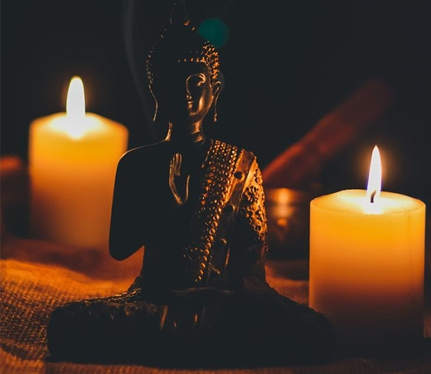
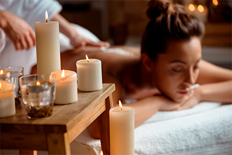

O que é Tantra?
O Tantra é uma tecnologia de imersão da consciência, que nos ajuda a entender por que tudo
existe. Pode ser visto como uma filosofia, uma maneira de encarar a vida, um sistema ou um meio
para alcançar algo.
Há várias escolas filosóficas tântricas diferentes, mas que compartilham uma base comum
centrada na expansão da consciência, no aprendizado com nossas emoções, na conexão com a
natureza e liberação de nossa energia vital (Kundalini), frequentemente associada à energia
sexual, é essencialmente a força vital dentro de nós, impulsionando nossa energia e
criatividade.
De acordo com o Tantra, se nós podemos criar outra vida, podemos moldar nossa realidade
usando essa energia conscientemente. O Tantra vê a vida na Terra como um caminho de evolução
espiritual através do corpo e de nossas ações.
Como Funciona a Terapêutica Tântrica?
A sessão de Psicoterapia Tântrica e Terapia Corporal Tântrica individual e personalizada baseada
no desenvolvimento pessoal é uma experiência terapêutica holística e profundamente
transformadora, que combina os princípios do Tantra com a sabedoria da terapia corporal para
promover o crescimento pessoal, a cura emocional e o despertar da consciência.
Durante a sessão, você será recebido por um terapeuta altamente capacitado e respeitoso, que
criará um espaço seguro e acolhedor para explorar suas emoções, desafios e objetivos pessoais. A
abordagem é personalizada para atender às suas necessidades únicas, permitindo que você se sinta
à vontade para compartilhar suas experiências e questões mais íntimas. A abordagem terapêutica
enfatiza a importância da conexão entre corpo, mente e espírito, permitindo que você se
reconecte com sua própria sensualidade e sexualidade de maneira saudável e libertadora.
A sessão pode ser dividida em duas partes:
1ª Psicoterapia Tântrica: O terapeuta trabalhará com você por meio de diálogos reflexivos,
meditações e visualizações para acessar as camadas mais profundas de suas emoções e padrões
comportamentais. Essa jornada de auto exploração permitirá que você compreenda melhor a si
mesmo, seus bloqueios emocionais e crenças limitantes.
2ª Terapia Corporal Tântrica: O terapeuta irá explorar o corpo como um veículo para a
transformação e cura emocional. Por meio de toques terapêuticos, técnicas respiratórias e
movimentos específicos, você será convidado a liberar tensões e bloqueios físicos e emocionais.
Esses bloqueios, os quais chamamos de couraças, quando desbloqueados permitem que a energia
vital flua livremente em seu corpo.
Dúvidas Frequêntes
-
O que é terapia tântrica?
É uma modalidade terapêutica que mescla os fundamentos do tantra, com métodos terapêuticos contemporâneos. Seu objetivo central é fortalecer a ligação entre corpo, mente e espírito, visando melhorar o bem-estar e facilitar o processo de cura.
-
A terapia tântrica envolve sexo?
Embora o tantra esteja frequentemente associado à sexualidade, a terapia tântrica não se concentra apenas questões sobre a sexualidade. Ela aborda a sexualidade como parte integrante da experiência humana, mas o objetivo principal é expandir a consciência, promover o bem estar e a cura.
-
Como funciona uma sessão de terapia tântrica?
Podem variar, mas geralmente incluem práticas como meditação, respiração consciente, massagens, técnicas corporais e conversas terapêuticas. O terapeuta cria um ambiente seguro para explorar questões emocionais e sensoriais.
-
A terapia tântrica é segura?
Quando realizada por terapeutas qualificados e éticos, a terapia tântrica é segura. É importante escolher um profissional de confiança que siga diretrizes éticas e de consentimento.
-
Qual é o papel do consentimento na terapia tântrica?
O consentimento é fundamental na terapia. Os terapeutas devem respeitar os limites e desejos do cliente em todos os momentos. Qualquer atividade realizada durante a terapia deve ser consensual e confortável para o cliente.
-
A terapia tântrica é religiosa?
A terapia tântrica não é necessariamente religiosa, embora tenha raízes nas tradições espirituais do tantra. Ela pode ser adaptada para pessoas de diferentes crenças espirituais e ser vista como uma abordagem holística para o bem-estar.
-
Existe interação íntima e sexual entre cliente e terapeuta?
É importante esclarecer que a terapia tântrica não envolve relações sexuais entre o terapeuta e o cliente. O foco principal não é o sexo em si. Em vez disso, visa promover a consciência, a cura e o crescimento pessoal, utilizando técnicas que envolvem a energia sexual de maneira terapêutica e respeitosa.
-
Existe a nudez durante a sessão?
Em algumas sessões, a nudez parcial ou completa da cliente pode ser parte da prática. Sempre previamente definida por meio de uma conversa entre terapeuta e cliente, com total respeito pelos limites e pelo nível de conforto do cliente. Quando utilizada, tem o propósito de promover a consciência corporal e a conexão com a energia vital, sem o intuito de atividade sexual. Portanto, a nudez, se presente, é parte integrante da abordagem terapêutica e deve ser tratada com respeito e sensibilidade.
-
Terapia Tântrica para Casais
A terapia despertará em vocês a curiosidade e respeito pelas individualidades de cada parceiro , valorizando suas necessidades e desejos. Através dessa terapia, vocês serão abraçados por um aumento na intimidade e conexão emocional. Juntos, irão desvendar os segredos de uma comunicação plena e amorosa, abrindo caminho para a resolução de conflitos e um relacionamento mais fortalecido.
-
Terapia Individual
Durante a sessão, você será recebido(a) por um terapeuta altamente capacitado e respeitoso, que criará um espaço seguro e acolhedor para explorar suas emoções, desafios e objetivos pessoais. A abordagem é personalizada para atender às suas necessidades únicas, permitindo que você se sinta à vontade para compartilhar suas experiências e questões mais íntimas. A abordagem terapêutica enfatiza a importância da conexão entre corpo, mente e espírito, permitindo que você se reconecte com sua própria sensualidade e sexualidade de maneira saudável e libertadora.

O que nossos pacientes dizem?
veja você mesmo!
-
SEJA UM DE NOSSOS ALUNOS
Aula de especialização para Terapeutas - Ferramentas Terapêuticas. Curso Livre de Massagem Tântrica Avançada. Curso Livre de Massagem Tântrica Curso de Massagem Tântrica Individual Nataraj: Aperfeiçoamento Terapêutico Florescer: Um novo olhar sobre a Sexualidade.
-
AGENDE SUA SESSÃO
Agende agora sua sessão para terapias individuais, para explorar suas emoções, desafios e objetivos pessoais.

Ou marque uma sessão para casais e desvende os segredos de uma comunicação plena, saudável e amorosa, criando um caminho para a resolução de conflitos e um relacionamento sólido.